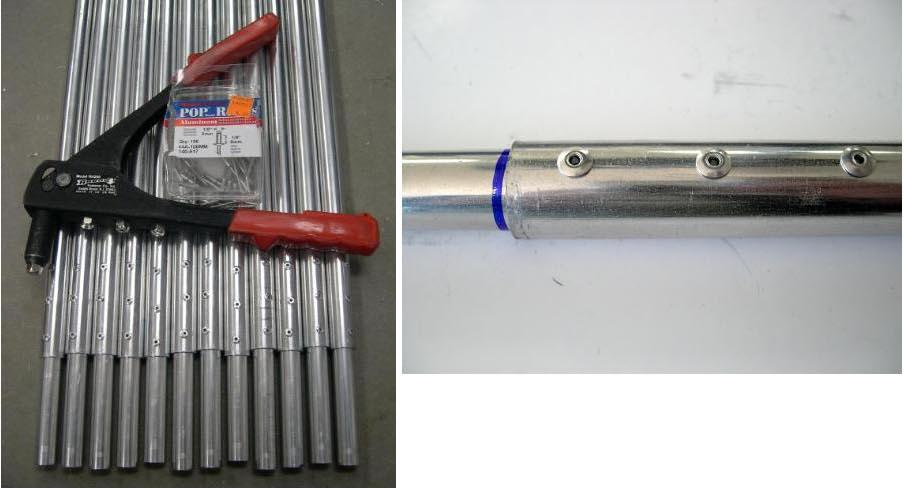

| Inserts (4 of 6) | Menu Last Page Next Page |
|
 Riveting Inserts - The inserts are now riveted to the 6ft stringer sections. It's now time to assemble the frame on the strongback. You'll be amazed at how quickly the various parts transform into something resembling a boat. |
|